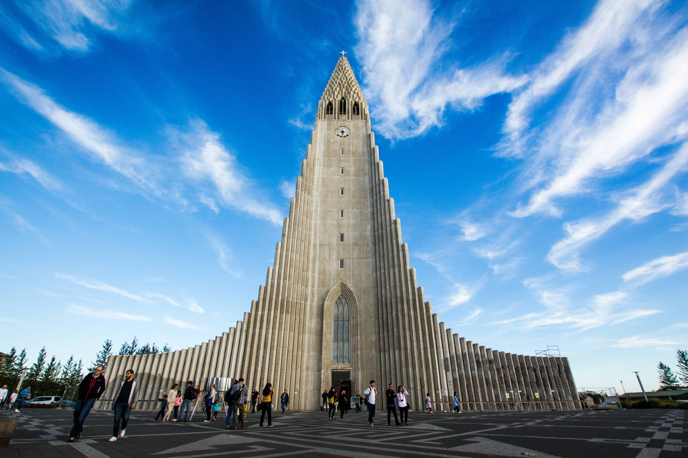

Reykjavík é a capital mais setentrional do mundo, uma cidade onde a modernidade escandinava se encontra com a força bruta da natureza. Apesar de pequena, a cidade possui um charme imenso, caracterizada por suas casas de telhados coloridos, ruas extremamente seguras e um cenário artístico e musical surpreendentemente vibrante. É a porta de entrada para a "Terra do Fogo e do Gelo".
Para quem planeja uma visita, estes são os pontos turísticos e experiências fundamentais:
- Hallgrímskirkja: A icônica igreja cujo design foi inspirado nas colunas de basalto vulcânico presentes na natureza do país.
- Blue Lagoon (Lagoa Azul): Um spa geotérmico de águas ricas em minerais, com uma cor azul leitosa inconfundível.
- Golden Circle: Uma rota próxima que inclui o gêiser Strokkur, a imponente cachoeira Gullfoss e o Parque Nacional Thingvellir.
Explorar Reykjavík é vivenciar contrastes extremos. No alto verão, você experimenta o fenômeno do Sol da Meia-Noite, onde os dias parecem não ter fim. Já no inverno, as noites longas transformam a cidade no acampamento base perfeito para caçar a mágica Aurora Boreal. A cultura local, profundamente enraizada nas sagas vikings, reflete um povo resiliente e acolhedor em um dos ambientes mais únicos do planeta.